Which skis, snowboards and boots fit which skier. Every recommendation below is a product we stock, matched to the use its maker states for it. The Boot Lab and the sales floor make the final call with you.
Seven skier profiles run through each category. Find yourself in the left column, then read across. Prices, sizes and this season’s stock are in the store; call either location or book a fitting.
Skis
Twelve ski brands in Lincoln and Scarborough.
New to the sport or back after years away. Wants forgiveness, easy turn initiation and a fit that does not hurt.
Rossignol calls the Experience 82 Ti a high-performance all-resort ski and rates it from beginner to expert; Atomic rates the Maverick 88 CTI the same way and describes stable control with a playful all-mountain feel. Most first-timers should rent or lease for a season first, then buy boots before skis.
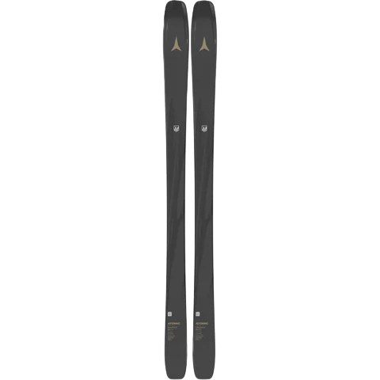
Atomic MaverickLinks parallel turns on blue runs and is starting to ski faster and in more places. Wants gear that rewards better technique without punishing mistakes.
Elan builds the Ripstick 88 with a shorter turn radius and narrower waist for grip and control on typical resort conditions. Nordica designs the Unleashed 90 for up-and-coming rippers. Blizzard positions the Black Pearl 88 for women who want confidence and strength along with forgiveness; it is Avery’s staff pick.
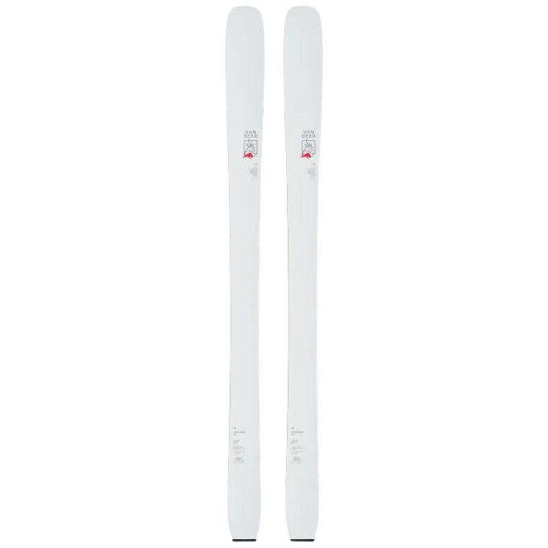
Nordica UnleashedSkis or rides the whole mountain in most conditions: groomers, bumps, trees, the occasional powder day. One setup that does it all.
The Ripstick 96 Black Edition is Robbie’s staff pick and is aimed at advanced and expert skiers who want more muscle than the standard Ripstick. Head calls the Kore 94 Ti its most purely all-mountain ski. Völkl’s M7 Mantra suits skiers with solid technique who like to lay a ski over at speed. All sit in the 94 to 98 mm waist range.
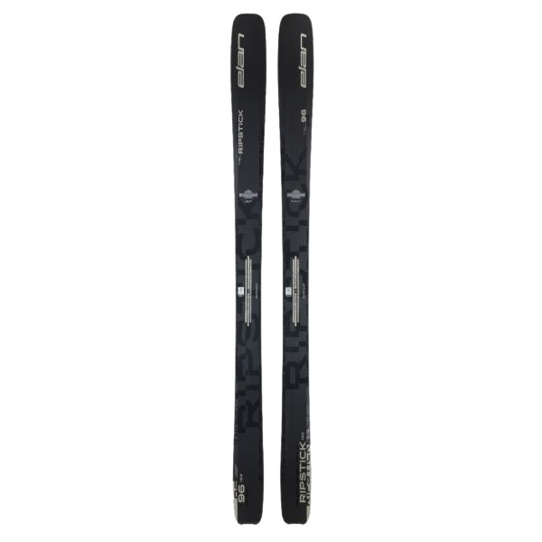
Elan Ripstick 96 Black EditionChases soft snow, glades and off-piste terrain, sometimes with a skin track involved.
Salomon redesigned the QST line for 2026: the QST 100 is described as the most progressive and versatile ski in the collection for the assertive freerider, and the QST 106 is built for soft snow and off-piste. Atomic’s Maverick 105 CTI replaces the Maverick 100 Ti as its playful freeride ski.
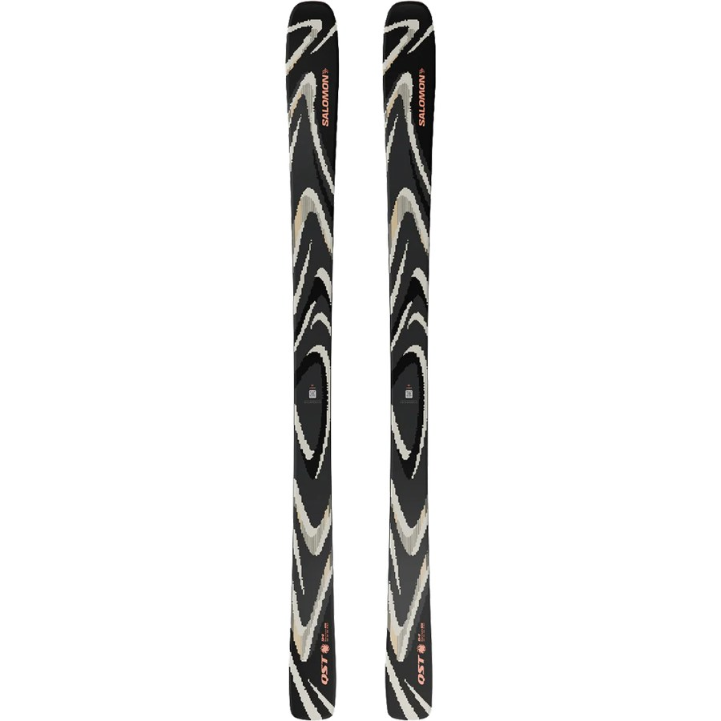
Salomon QSTLives on corduroy and hardpack and wants edge grip, rebound and a race feel without a race license.
The Redster Q9 is Atomic’s frontside carver for advanced and expert groomer skiers, at a 75 mm waist. The X9S Retro Arc 735 RS, Jamie’s staff pick, is a 70th-anniversary limited edition of the Redster X9S with the 1991 ARC graphics, built for skiers who want to rail turns on groomers and hardpack.
Gate training, USSA and FIS events, masters racing. Discipline-specific skis, race boots and full prep.
Atomic describes the Redster S9 as a slalom machine built on race-winning technology and the G9 as race-inspired GS power. Van Deer’s World Cup models are built for competitive athletes. All seven race brands are on the wall in Lincoln, with FIS and USSA prep in the tune room.
Growing kids from first lessons to the race team. Fit and cost per season matter most.
The Scarborough store leases skis, bindings and boots for the season for $159 with pick-ups from October 1; Lincoln rents junior packages from $20 a day. For the race team, Van Deer’s GS-JR Pro is a 65 mm FIS-legal junior GS ski.
Snowboards
The Mothership, inside the Lincoln store. Scarborough does not sell snowboards.
New to the sport or back after years away. Wants forgiveness, easy turn initiation and a fit that does not hurt.
Nidecker builds the Play, a soft directional twin with CamRock, to give entry-level riders a reliable platform for progression, and describes the Merc as building confidence from the first ride. Salomon’s Faction BOA is a soft boot for riders working on linking smooth turns.
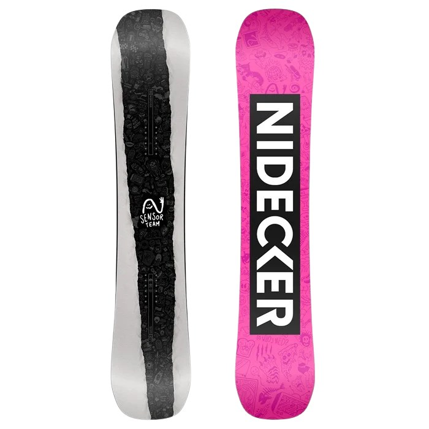
NideckerLinks parallel turns on blue runs and is starting to ski faster and in more places. Wants gear that rewards better technique without punishing mistakes.
Lib Tech’s Skate Banana is a true twin with rocker between the feet and camber at tip and tail; the brand calls it supremely easy riding and rates it from beginner to advanced. Deeluxe positions the ID for the progressing intermediate exploring new runs.
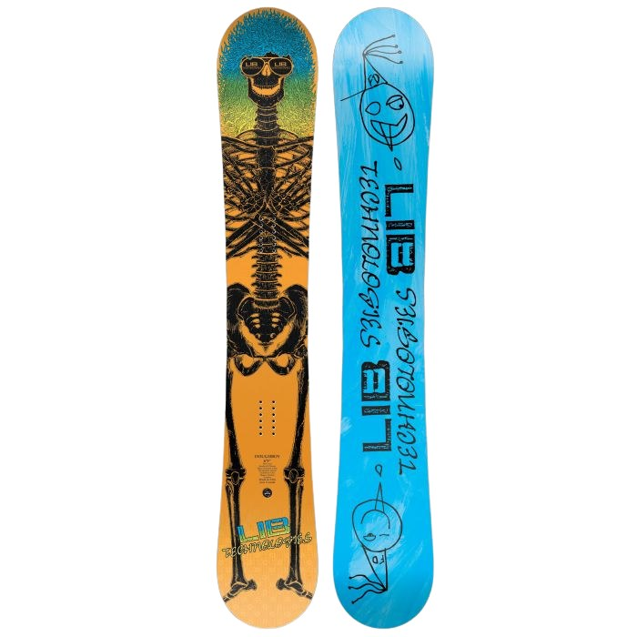
Lib Tech Skate BananaSkis or rides the whole mountain in most conditions: groomers, bumps, trees, the occasional powder day. One setup that does it all.
Never Summer rates the Proto Type 3, a true twin with Triple Camber Recurve and a 6/10 flex, for intermediate to expert riders as a do-it-all board. Rome’s Katana is a lightweight, responsive binding for trees and hard carves. ThirtyTwo calls the TM-2 the most versatile boot in its line.
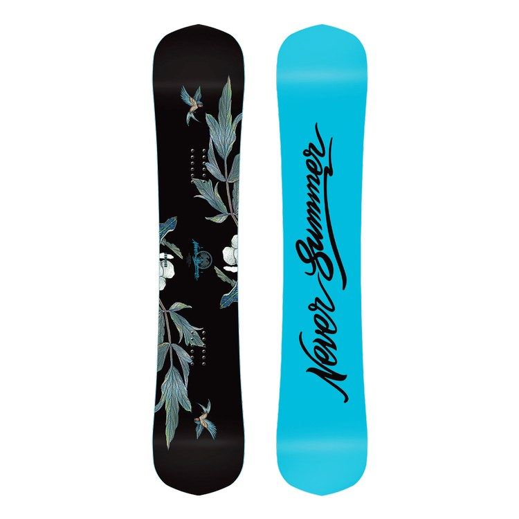
Never Summer Proto Type 3Chases soft snow, glades and off-piste terrain, sometimes with a skin track involved.
Nidecker’s Supermatic step-in bindings come in three flexes; LT and Carbon are the stiff, responsive options. Powder-specific board recommendations depend on the current wall in the Mothership, so ask in the store.
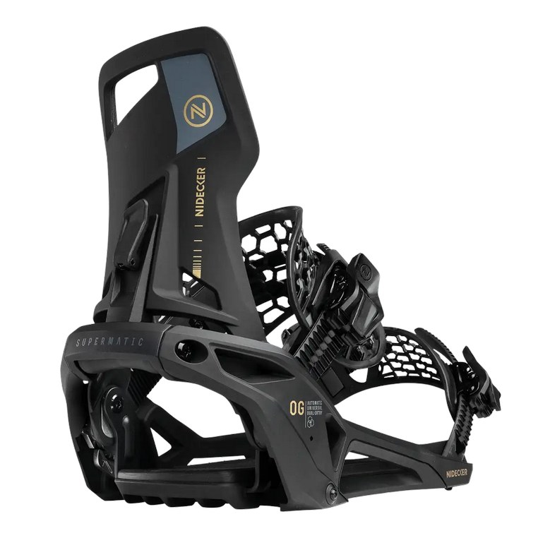
Nidecker SupermaticLives on corduroy and hardpack and wants edge grip, rebound and a race feel without a race license.
Nidecker calls the Sensor Pro, a true twin on full camber with a 4/5 flex, the weapon of choice for rippers. Deeluxe’s Deemon Pro is a dual-BOA 8/10 boot for advanced and expert riders. Camber and a stiff boot are what hold an edge on hardpack.
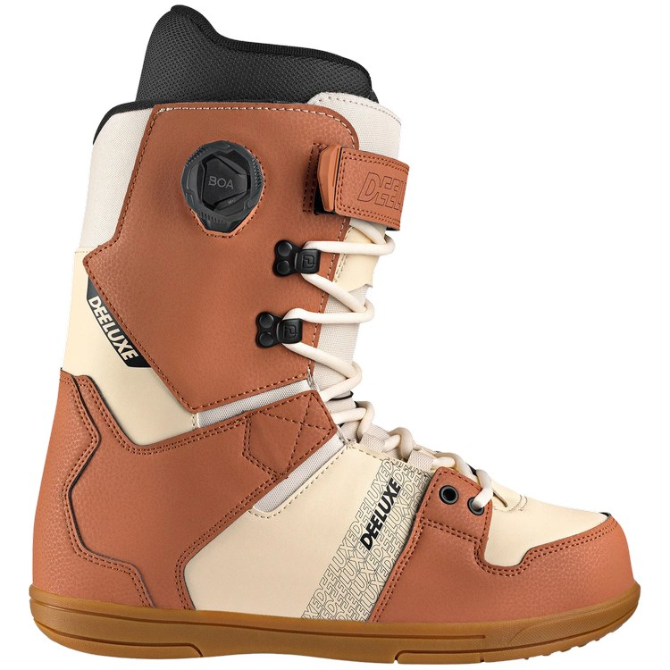
DeeluxeGrowing kids from first lessons to the race team. Fit and cost per season matter most.
Lincoln rents snowboard packages from $45 a day. Snowboards and snowboard rentals are a Lincoln program; the Scarborough store sells skis only.
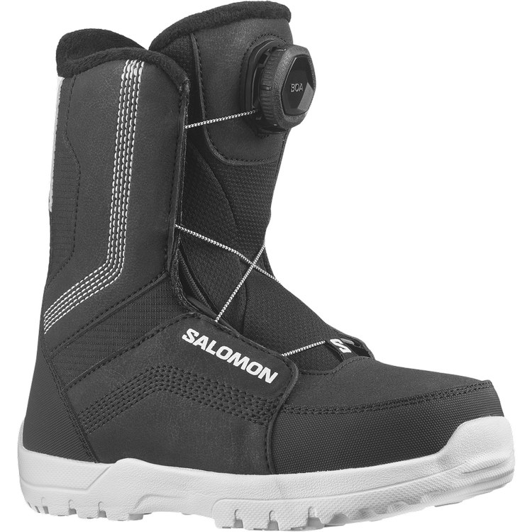
Salomon BOA bootSki boots
Fitted in the Boot Lab. Eleven boot brands.
New to the sport or back after years away. Wants forgiveness, easy turn initiation and a fit that does not hurt.
Atomic calls the Hawx Prime the most forgiving all-mountain boot in the Prime range, built for confidence and control on a 100 mm medium last. Every boot we sell starts on the Boot Lab bench with a shell fit, so the flex number matters less than the fit.
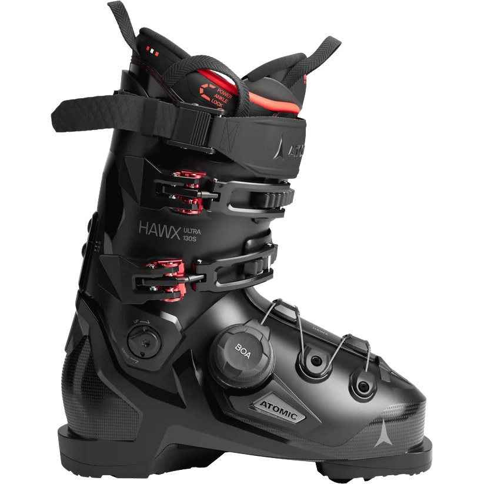
Atomic HawxLinks parallel turns on blue runs and is starting to ski faster and in more places. Wants gear that rewards better technique without punishing mistakes.
Tecnica offers the Mach1 in three widths (97, 100 and 103 mm) and three flexes, which makes it easy to match a foot. Nordica positions the Unlimited for skiers charging at the resort and touring on the same boot.
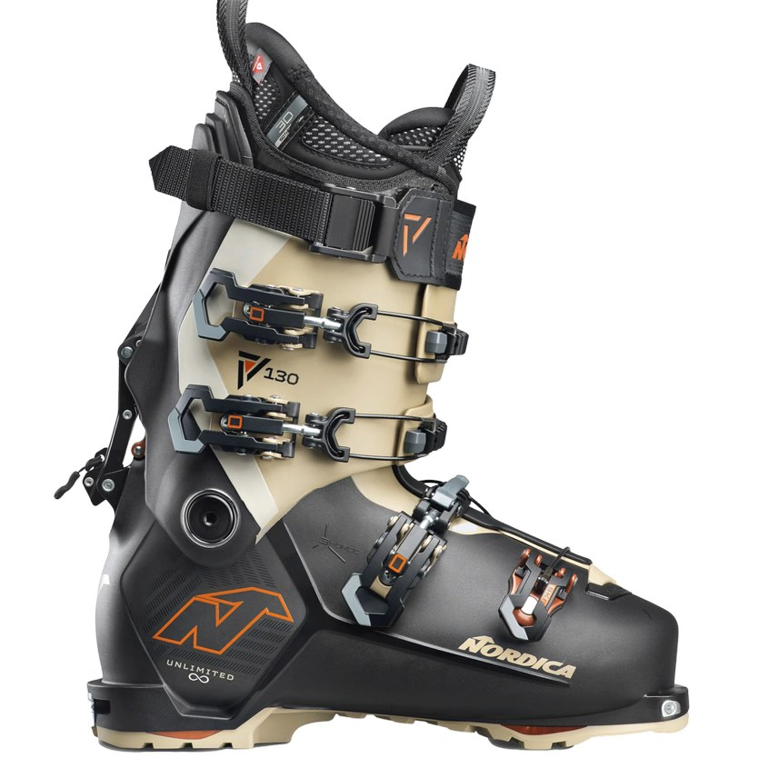
Nordica UnlimitedSkis or rides the whole mountain in most conditions: groomers, bumps, trees, the occasional powder day. One setup that does it all.
All four are 98 mm all-mountain boots at a 130 flex. Salomon describes the S/Pro Alpha 130 as a very stiff flex for aggressive expert skiers; Nordica positions the Promachine 3 130 S for advanced and expert skiers who want precision and power.
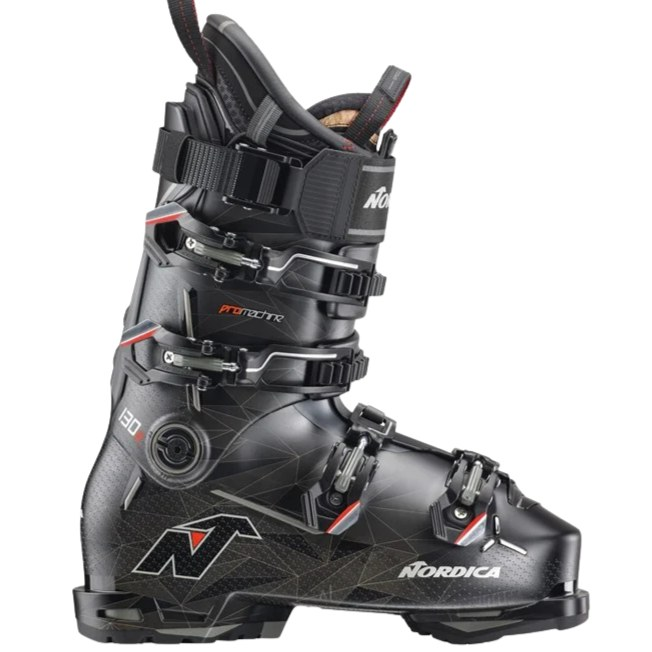
Nordica PromachineChases soft snow, glades and off-piste terrain, sometimes with a skin track involved.
Atomic calls the Hawx Ultra XTD the ultimate all-mountain crossover boot for skiing in and outside the boundaries. Salomon’s Shift Alpha BOA is built for skiers who charge the steepest lines and skin to reach them. Nordica’s Unlimited 130 DYN covers resort days, all-day tours and dawn patrols.
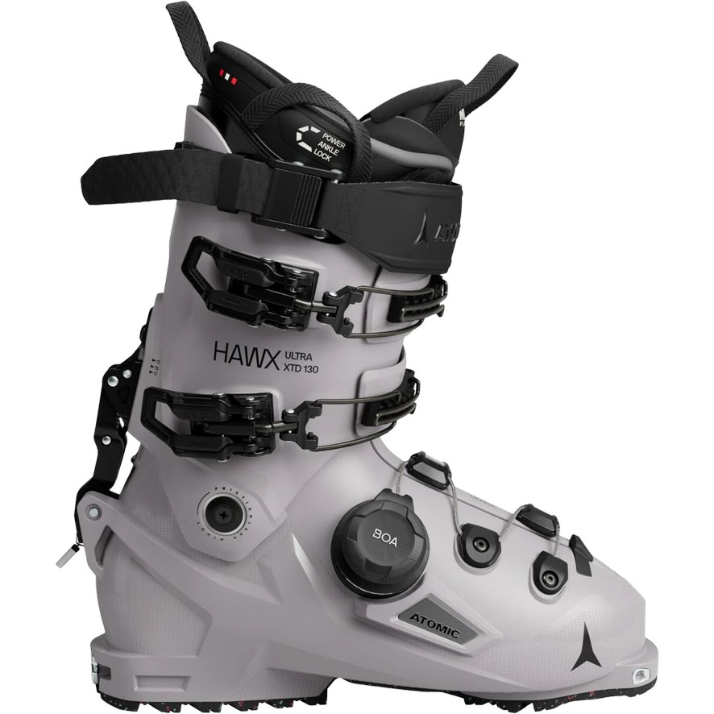
Atomic Hawx Ultra XTDLives on corduroy and hardpack and wants edge grip, rebound and a race feel without a race license.
Atomic describes the Redster TX as bred on the race course but built for on-piste skiing, on a 96 mm last. A frontside boot like the Promachine 3 gives the same precision with a slightly friendlier fit.
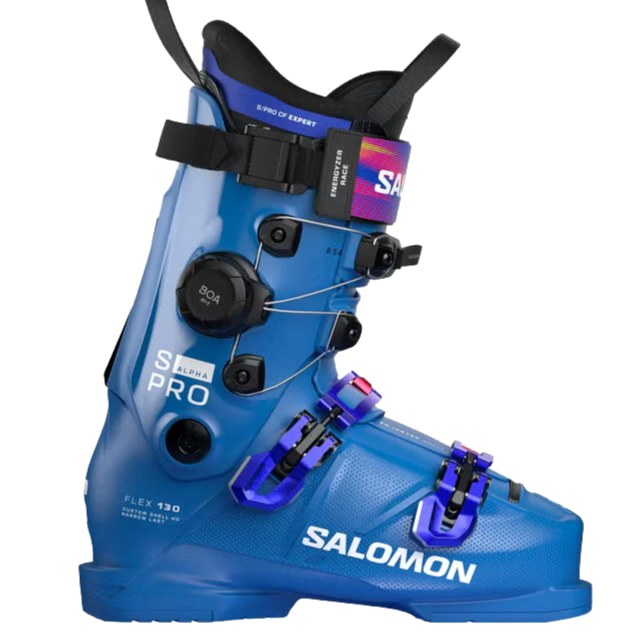
Salomon S/ProGate training, USSA and FIS events, masters racing. Discipline-specific skis, race boots and full prep.
Rossignol’s Hero World Cup is race-engineered for competitive racing and on-trail performance. Lange builds the RS 130 for expert skiers, instructors and racers looking for speed, power and precision. Denis’s staff pick is the Atomic Redster 130. Race boots are fitted and prepped in the Lincoln Boot Lab.
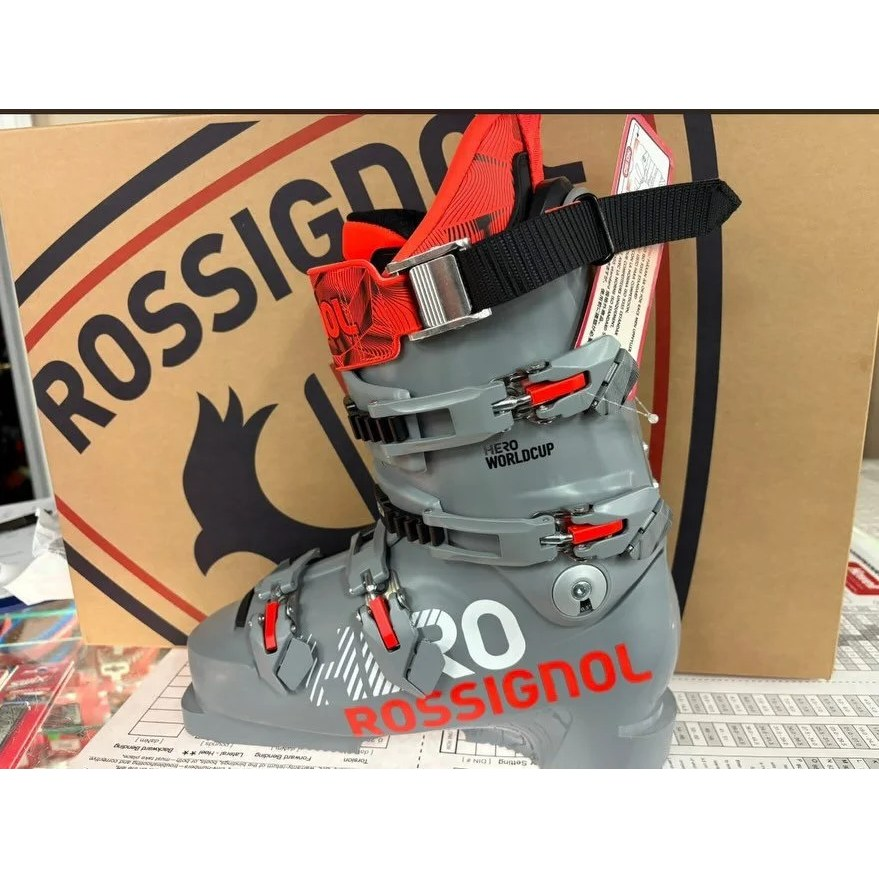
Rossignol Hero World CupGrowing kids from first lessons to the race team. Fit and cost per season matter most.
Lease and rental packages include boots. For kids on a race program, the Boot Lab fits junior race boots the same way it fits adults: shell fit first, then footbeds and adjustments.
Positioning statements are paraphrased from each brand’s product page or its authorized retailers as of September 2026. Models change each season; this page is a Payload collection (profile, category, picks, image) so the shop can update it without a developer.